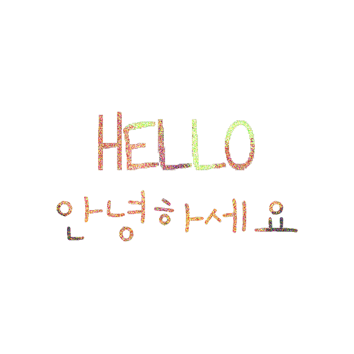
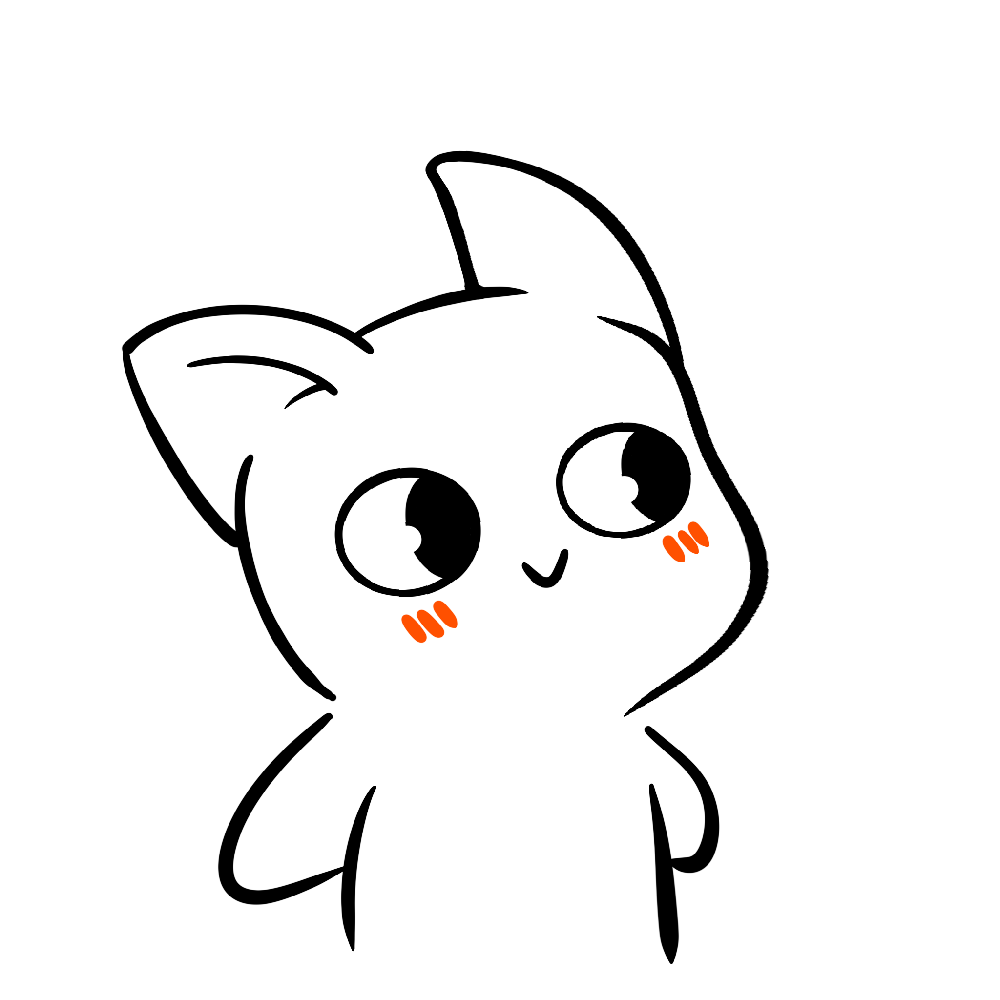
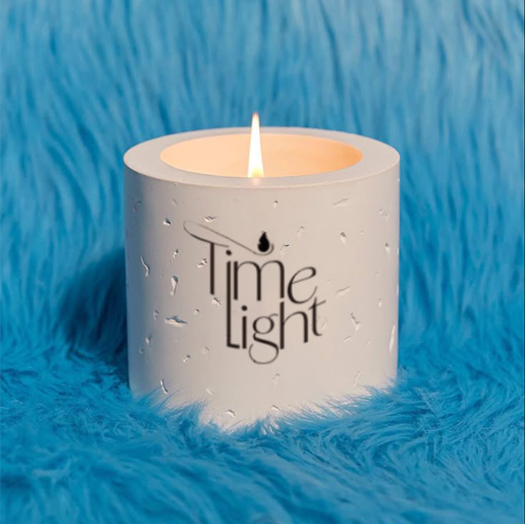

 
“Designing beyond form toward emotion.”
Contact
Yun minhye
📧 munhye@gmail.com
📱 +82 10-4997-5216
🔗 @minhye.design

Computer Graphics 🕯️
Work: Planning Composition Wooden Design
Computer graphics 🎧
Work: Makeing on the album
Digital Design
Work: Fashion magazine